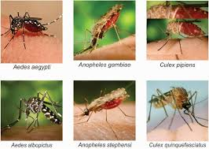

|
I am an M.Sc(Thesis) student in Computer Science and Engineering (CSE) at Shahjalal University of Science and Technology (SUST). My advisor is M. Jahirul Islam.
I also received my B.Sc.(Engineering) in Computer Science and Engineering (CSE) from North East University Bangladesh (NEUB). My undergrad thesis supervisor was Muhammad Mahir Hasan Chowdhury.
Email | GitHub | LinkedIn | CV
jasminjahanpuspo AT {gmail.com}
|

|
Test Scores
|
Publications |
|  |
EnsembleNet: Enhancing vector mosquito species classification through transfer learning-based ensemble model. Abdullah Al Maruf, Md. Mahmudul Haque, Rownuk Ara Rumy, Jasmin Jahan Puspo, Dr. Zeyar Aung. arXiv, 2024 arXiv |
Binary Classification using Transfer Learning EnsembleNet on ISIC 2018 Dataset. Jasmin Jahan Puspo. ICCIT 2024 project page |
One Stage Detection, Segmentation, Shape, and Stage Classification in Digital Mammography. Jasmin Jahan Puspo, Muhammad Mahir Hasan Chowdhury. Undergraduate Thesis project page |
Personal Dataset Collection |

|
Bengali Taka [Kaggle] - 397 high-resolution images (2408x1496) captured via mobile device, including six categories (10, 20, 50, 100, 500, and 1000 Taka denominations), size at 66 MB. |